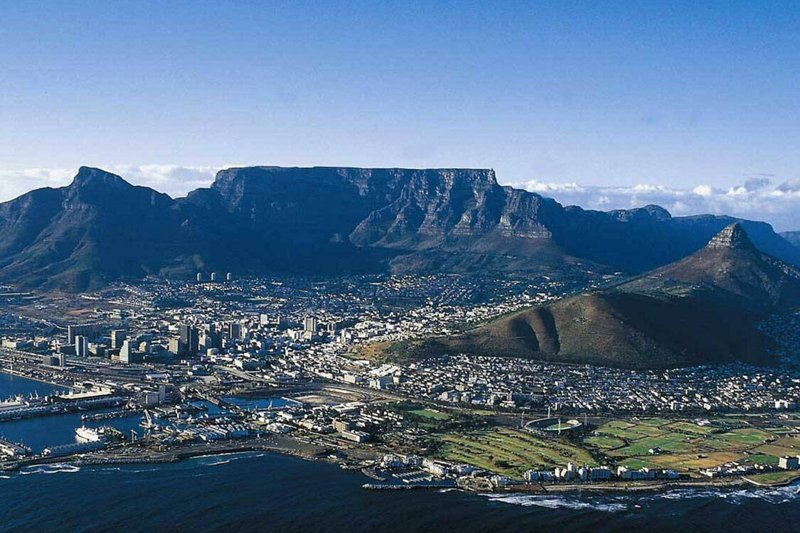
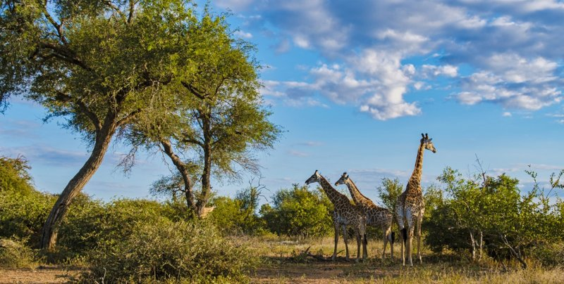
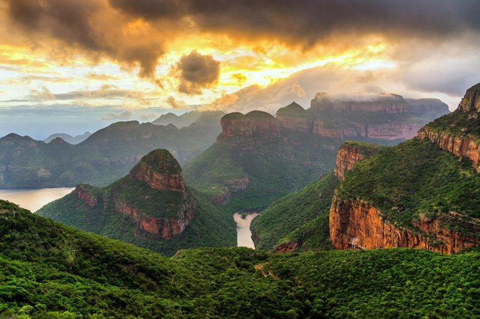
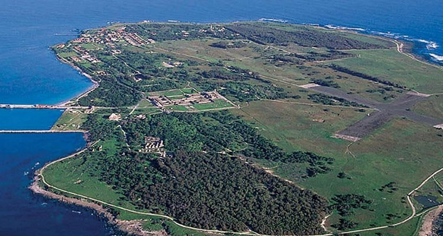
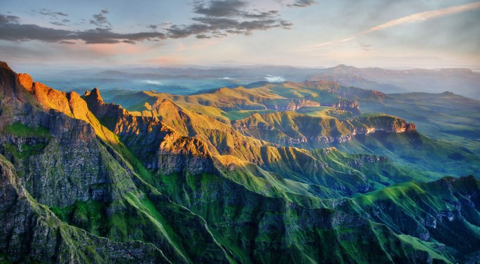
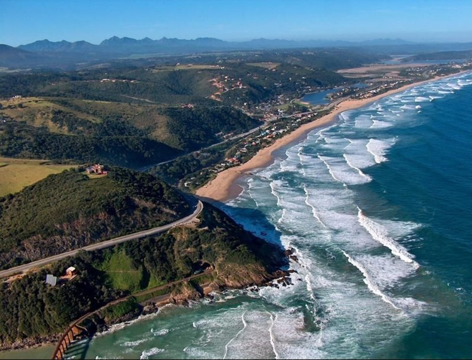
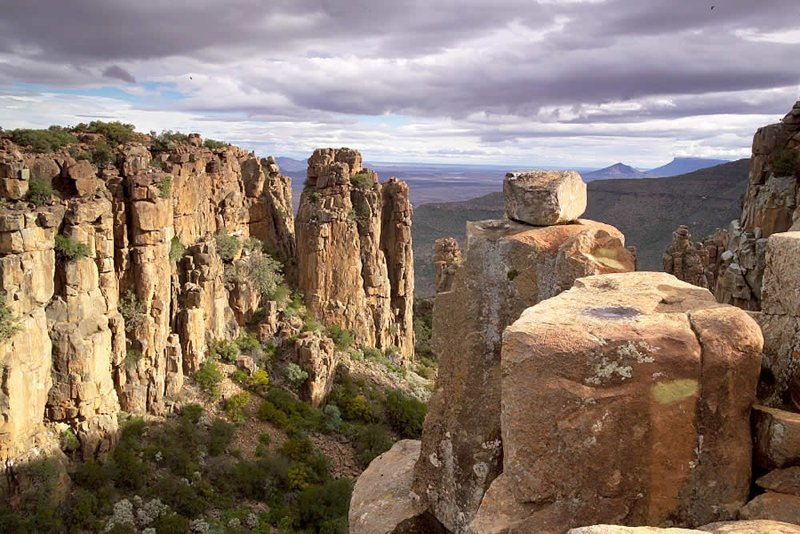
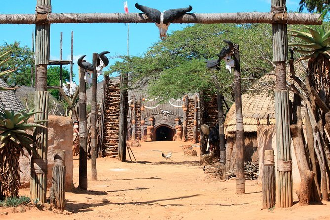

Discover Timbuktu Chamber of Commerce

Table Mountain
Cape Town, Western CapeOne of the most iconic landmarks in South Africa, offering breathtaking views of Cape Town.

Kruger National Park
Limpopo & MpumalangaOne of Africa's largest game reserves, home to the Big Five and diverse wildlife.

Blyde River Canyon
MpumalangaA stunning natural canyon with breathtaking panoramic views and lush landscapes.

Robben Island
Off the coast of Cape TownHistoric island where Nelson Mandela was imprisoned, now a UNESCO World Heritage Site.

Drakensberg Mountains
KwaZulu-NatalA stunning mountain range offering hiking, waterfalls, and ancient rock art.

Garden Route
Western & Eastern CapeA scenic coastal drive with picturesque towns, forests, and beaches.

Valley of Desolation
Eastern CapeA striking geological formation in the Karoo, offering stunning sunset views.

Shakaland
KwaZulu-NatalA cultural village showcasing the traditions and history of the Zulu people.